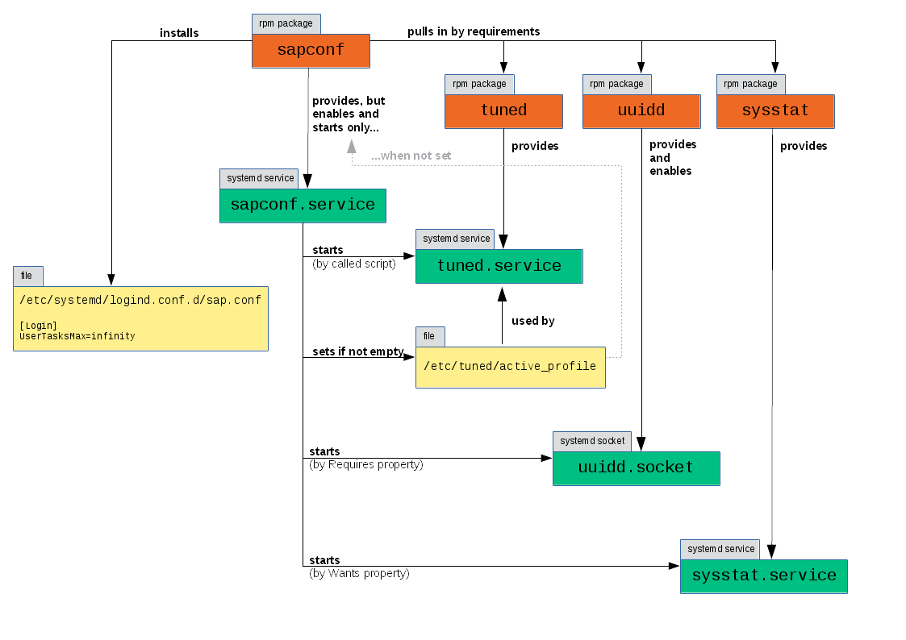
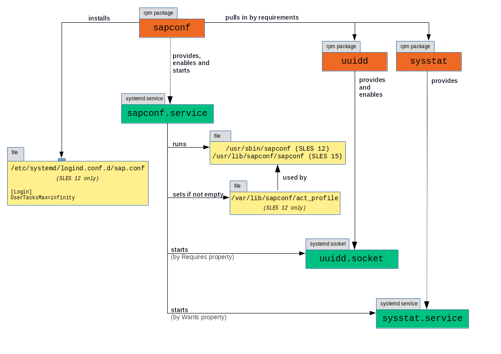

sapconf - A way to prepare a SLES system for SAP workload - Part 1
June 5, 2018 | By: Sören Schmidt
sapconf 4 → sapconf 5
For all the people who read this post for the first time: "Nice to meet you!"
And for those who came back here due to my sapconf 5 announcement: "Welcome back!"
I wracked my brain if I should have a new series about sapconf 5 or just add some comments to my old blog posts. As you might guess, I decided for the latter.
If you read through this series you will find here and there boxes like this, labeled with "sapconf 4 -> sapconf 5", where I explain the differences. Remember, the major change between 4 and 5 is, that we get rid of tuned.
Enjoy!
As promised in the post "A new sapconf is available" this is the first article about sapconf. This series will cover the installation, update and configuration of sapconf, as well as giving a few tips what you should take care of and how to achieve certain things.
To do so, I have set up a SLES 12 SP3 with the latest updates and sapconf 4.1.12-40.47.1.
NOTE: For further documentation check SAP note 1275776 and the man pages shipped with sapconf.
This article will cover the installation.
Let's start!
Installation
sles12-sp3:~ # zypper install sapconf
Refreshing service 'SUSE_Linux_Enterprise_Server_12_SP3_x86_64'.
Loading repository data...
Reading installed packages...
Resolving package dependencies...
The following 4 NEW packages are going to be installed:
sapconf sysstat tuned uuidd
4 new packages to install.
Overall download size: 534.7 KiB. Already cached: 0 B. After the operation, additional 1.4 MiB will be used.
Continue? [y/n/...? shows all options] (y):
Retrieving package
...
(removed for brevity)
...
Additional rpm output:
Created symlink from /etc/systemd/system/sockets.target.wants/uuidd.socket to /usr/lib/systemd/system/uuidd.socket.
...
Additional rpm output:
Updating /etc/sysconfig/sapnote-1680803...
Updating /etc/sysconfig/sapconf...
Created symlink from /etc/systemd/system/multi-user.target.wants/sapconf.service to /usr/lib/systemd/system/sapconf.service.
Set the maximum number of OS tasks each user may run concurrently (UserTasksMax) to 'infinity'
With this setting your system is vulnerable to fork bomb attacks.
Please reboot the system for the UserTasksMax change to become effective
sapconf 4 → sapconf 5
Please ignore anything about the tuned package. It does not get pulled in by a dependency anymore!
This is quite a lot of information to digest. Let me work thru it step by step and tell you the meaning.
The following 4 NEW packages are going to be installed:
sapconf sysstat tuned uuidd
Obviously sapconf is not the only package we have got. The packages sysstat to collect sar data, tuned for system tuning (we'll come to it later) and uuidd which is indispensable for SAP software have been installed too.
Everyone of these packages contains units for systemd (just believe me here), so let's see what systemd has to say about the status:
sles12-sp3:~ # systemctl status sapconf sysstat tuned uuidd
● sapconf.service - sapconf
Loaded: loaded (/usr/lib/systemd/system/sapconf.service; enabled; vendor preset: enabled)
Active: active (exited) since Fri 2018-05-11 12:02:18 CEST; 21min ago
...
After the installation sapconf.service has been enabled and started.
This is important!
Sapconf is meant as a minimalistic tool to prepare your system for SAP workload. Installation implies the intend to use it, so a default configuration has been applied.
These default values are sane and should be valid for most use cases. Nevertheless you should verify that all settings are suited for your scenario.
If you feel uneasy that sapconf is changing your system directly after installation, I will show in a later article, how you can prevent this.
There is one exception when sapconf is not enabled and started by default. Because sapconf relies on tuned, a set non-sapconf profile prevents this (I will cover this in more detail in the article about sapconf configuration).
This is based under the assumption that an administrator has already configured tuned on purpose and sapconf will not interfere with this.
IMPORTANT: After installation sapconf is started and enabled unless a non-sapconf tuned profile is set already!
sapconf 4 → sapconf 5
There is no exception anymore, which could prevent sapconf 5 from being enabled on boot!
After updating to sapconf 5 tuned gets disabled and stopped.
If you enable it again tuned will work together with sapconf! If you do not configure tuned carefully you will have both tools fight each other! I have added a special chapter later, how to use both.
● sysstat.service - Write information about system start to sysstat log
Loaded: loaded (/usr/lib/systemd/system/sysstat.service; disabled; vendor preset: disabled)
Active: active (exited) since Fri 2018-05-11 12:02:18 CEST; 21min ago
...
Sysstat was started, but is disabled.
The sapconf.service will start sysstat.service automatically.
Here is the magic behind:
sles12-sp3:~ # cat /usr/lib/systemd/system/sapconf.service
[Unit]
Description=sapconf
...
Wants=sysstat.service
...
As long as you use sapconf, sysstat will be started and stopped with it. When you remove the sapconf package the sysstat package will remain on the system, but the service will be inactive. You have to enable the sysstat service, if you want to use it further.
It does not do any harm to do it now if you like.
If you have objections against sysstat, I will show in a later article a way to disable it.
With tuned we see the same behavior like with sysstat. It is disabled, but started by sapconf.service.
But when we check /usr/lib/systemd/system/sapconf.service, we do not see any dependency for tuned.
To find out how it works, you have to dig deeper and check the script, that is started by the sapconf.service:
sapconf 4 → sapconf 5
Again. Please ignore this about tuned if youre using sapconf 5.
sles12-sp3:~ # cat /usr/lib/systemd/system/sapconf.service
...
ExecStart=/usr/sbin/sapconf start
...
sles12-sp3:~ # cat /usr/sbin/sapconf
...
case "$1" in
start|restart|try-restart)
...
if ! systemctl status tuned &> /dev/null; then
systemctl start tuned
fi
...
Mystery solved.
Now, only uuidd is left:
● uuidd.service - Daemon for generating UUIDs
Loaded: loaded (/usr/lib/systemd/system/uuidd.service; indirect; vendor preset: disabled)
Active: inactive (dead)
Strange. Disabled and dead! But let us go back and take a closer lock to a tiny part of the rpm output above:
...
Additional rpm output:
Created symlink from /etc/systemd/system/sockets.target.wants/uuidd.socket to /usr/lib/systemd/system/uuidd.socket.
...
The uuidd will be started by socket activation, so we have to check the status of the uuidd.socket and not the service:
sles12-sp3:~ # systemctl status uuidd.socket
● uuidd.socket - UUID daemon activation socket
Loaded: loaded (/usr/lib/systemd/system/uuidd.socket; enabled; vendor preset: enabled)
Active: active (listening) since Fri 2018-05-11 13:22:34 CEST; 13min ago
Ah! Enabled and active. How it should be.
Another glance at the service file of sapconf connects the dots:
sles12-sp3:~ # cat /usr/lib/systemd/system/sapconf.service
...
Requires=uuidd.socket
...
There are a few lines left:
...
Updating /etc/sysconfig/sapnote-1680803...
Updating /etc/sysconfig/sapconf...
...
Some configuration files have been updated.
I skip these for now, because I tell more about the configuration of sapconf in the next article.
...
Created symlink from /etc/systemd/system/multi-user.target.wants/sapconf.service to /usr/lib/systemd/system/sapconf.service.
...
Well, here we see that the sapconf service is enabled for the multi-user target. We have found out that already.
...
Set the maximum number of OS tasks each user may run concurrently (UserTasksMax) to 'infinity'
With this setting your system is vulnerable to fork bomb attacks.
Please reboot the system for the UserTasksMax change to become effective
...
A reboot is required!
Here a systemd limit (UserTasksMax) is set to infinity, because the system default is to low for most SAP workloads.
Those who have more knowledge about systemd might argue, that a reboot is not required. Users should log off and log on again, programs have to be restarted, and so on and so on. This might be true, but in real life the chance that something is overseen even by a skilled administrator is high. A reboot is much easier and makes sure that the changes are in effect.
Even if sapconf tries to avoid reboots, sometimes it is unavoidable.
IMPORTANT: Please always check the output of the rpm to see, if additional steps are required after installation.
Sapconf is installed and working with its defaults. I have tried to summarize the dependencies in this picture:
 Dependencies of sapconf 4
sapconf 4 → sapconf 5
I have updated the graphic for sapconf 5:
 Dependencies of sapconf 5
That's it for today. The next article will cover the configuration.
next article: sapconf – A way to prepare a SLES system for SAP workload – Part 2